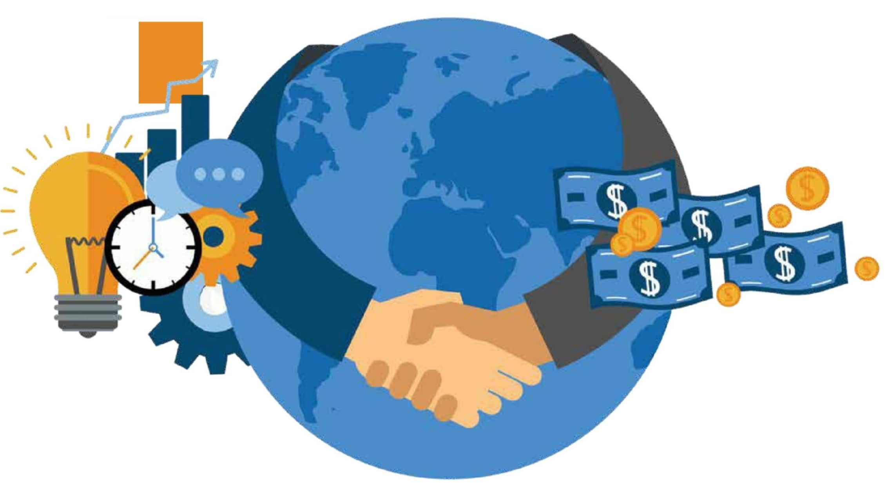

Second Blog on Globalization
September 30, 2020 by Jantae Leckie

Globalization can create new opportunities, new ideas, and open new markets that an
entrepreneur may have not had in their home country. As a result, there are a number of
positives associated with globalization:
1. It creates greater opportunities for firms in less industrialized countries to
tap into more and larger markets around the world
2. This can lead to more access to capital flows, technology, human capital, cheaper
imports and larger export markets
3. it allows businesses in less industrialized countries to become part of international
production networks and supply chains that are the main conduits of trade
For many developing nations, globalization has led to an improvement in standard of living through
improved roads and transportation, improved health care, and improved education due to the global
expansion of corporations.
Despite its benefits, the economic growth driven by globalization has not been done without awakening
criticism. The consequences of globalization are far from homogeneous: income inequalities, disproportional
wealth and trades that benefit parties differently. In the end, one of the criticisms is that some actors
(countries, companies, individuals) benefit more from the phenomena of globalization, while others are
sometimes perceived as the “losers” of globalization.